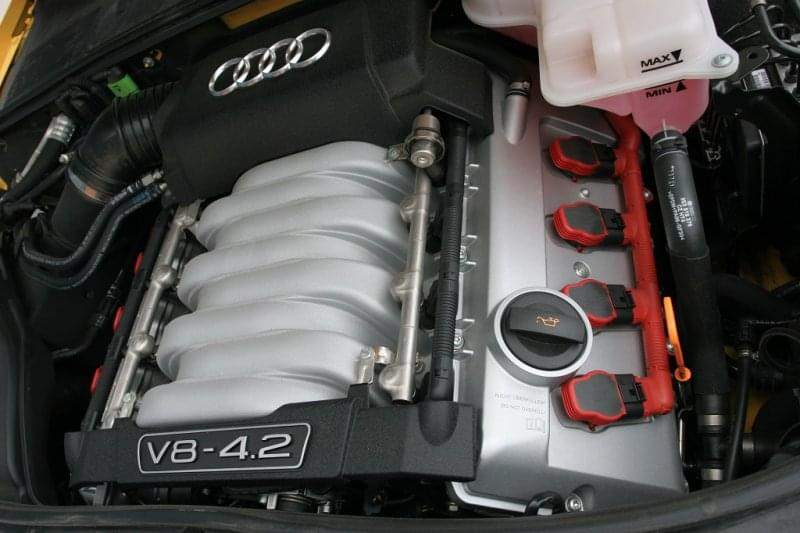
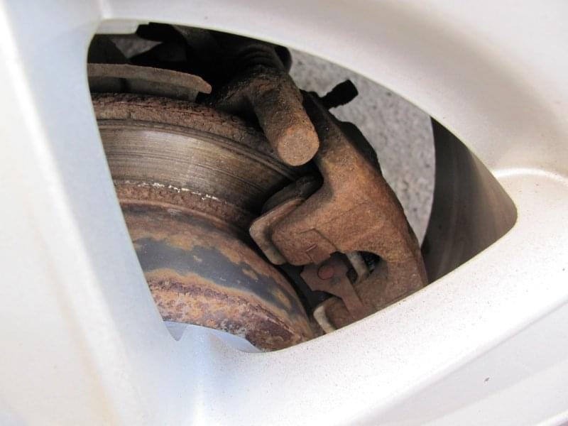
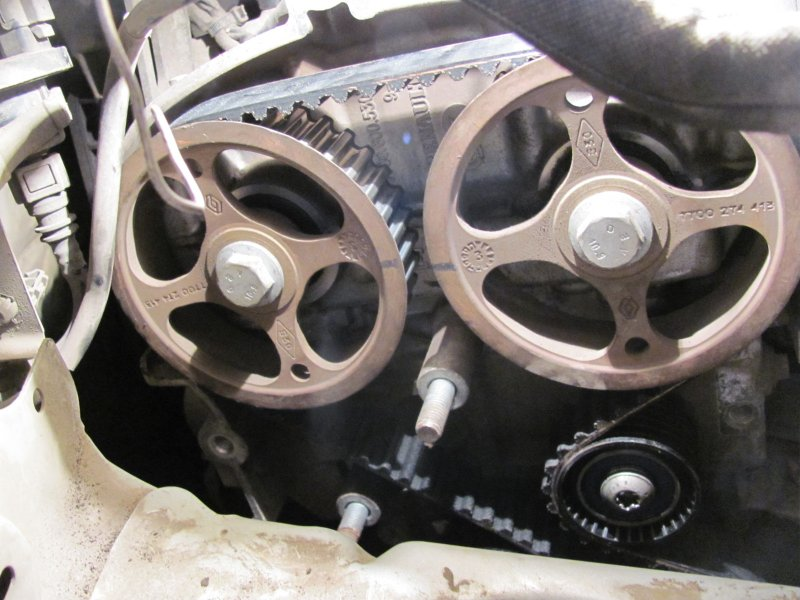
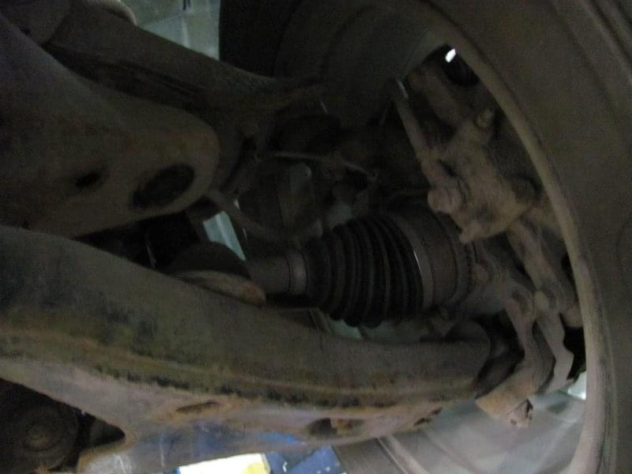
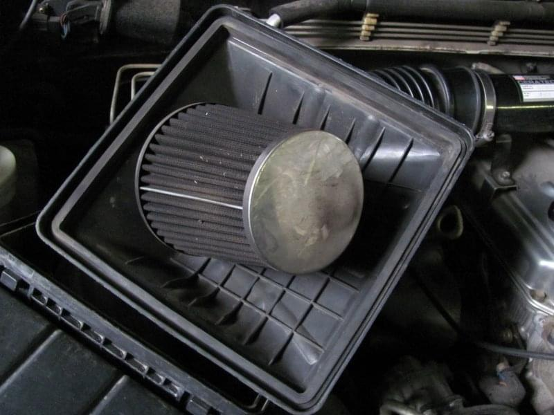

Что автовладельцы чаще всего забывают менять при обслуживании своего автомобиля?
Сложно встретить водителя, который бы полностью следовал рекомендациям автопроизводителя и вовремя бы менял все расходники и изношенные запчасти. Часто в целях экономии мы не меняем те или иные расходники, что способно привести к серьезным неисправностям автомобиля. Поговорим поподробнее о том, какие запчасти чаще всего водители забывают вовремя поменять.
Тормозные колодки
Несмотря на тот факт, что производители обычно устанавливают жесткий срок замены тормозных колодок, большинство из нас всё же меняет их по факту полного стирания. Действительно, состояние тормозных колодок, а, следственно, эффективность замедления автомобиля будет зависеть от манеры езды водителя. Кто-то постоянно разгоняется и также активно тормозит в пол, тогда как другие водители практикуют спокойный и размеренный ритм управления авто, в итоге тормозные колодки и все элементы тормозной системы могут прослужить у них куда дольше, чем-то установлено производителем.
Обычные тормозные колодки меняют каждые 20-30 тысяч километров пробега, однако при бережном отношении и спокойном ритме управления автомобилем такие тормозные колодки могут прослужить 45000 километров и более. Не лишним будет выполнять их регулярную проверку, определить остаточный износ можно даже не снимая колесной диск, что позволит быть полностью уверенным в состоянии тормозной системы, а, следственно, и безопасности управления машиной. Не забывайте лишь о том, что рекомендуется использовать качественные оригинальные тормозные колодки, которые смогут прослужить максимально долго.
Ремень ГРМ
Замена ремня ГРМ - это достаточно сложная процедура, самостоятельно выполнить её крайне сложно. В итоге, приходится обращаться в специализированные мастерские. Естественно, что всем водителям хотелось бы сократить свои затраты на эксплуатацию авто, поэтому мы часто самостоятельно увеличиваем такой межсервисный интервал ремня ГРМ, экономя на его замене. Однако подобное часто приводит к серьезным поломкам двигателя, после чего мотору требуется капитальный ремонт.
Нужно помнить, что экономия на замене ремня ГРМ может привести к его обрыву, после чего поршень разбивает клапана, а двигатель идёт под капремонт или замену. Именно поэтому экономить на ремне ГРМ не следует. Нужно своевременно проводить его замену, используя для этого исключительно качественные и оригинальные запчасти. Только в этом случае можно будет быть уверенным в хорошем техническом состоянии мотора, а ремень не оборвется от износа и повреждения.
Шаровые опоры
В процессе эксплуатации автомобиля на подвеску и шаровые опоры приходится повышенная нагрузка, что и приводит к их быстрому износу и необходимости замены. Обычно шаровые выдерживают 50-60 тысяч километров, после чего им требуется замена. Помните о том, что длительная эксплуатация автомобиля с изношенными шаровыми опорами не только приводит к выходу из строя всей подвески, но и существенно увеличивается риск дорожно-транспортных происшествий. Не стоит экономить на замене шаровых, в конечном счете, их дешевле и проще поменять на рекомендованном пробеге, чем в последующем перебирать всю подвеску или чинить машину после аварии, произошедшей именно из-за их износа.
Воздушный фильтр
Эксплуатация автомобиля с забившимся воздушным фильтром приводит к увеличению расхода топлива. Воздух попадает в силовой агрегат неочищенным, что может привести к появлению задиров и других проблем с двигателем. Поэтому следует периодически менять воздушный фильтр, используя для этого исключительно качественные оригинальные запчасти. Срок эксплуатации фильтра будет зависеть от конкретной марки автомобиля, а также особенностей эксплуатации авто. Например, в больших городах фильтр забивается быстрее, чем при использовании автомобиля преимущественно на загородной трассе.
Подведём итоги
При эксплуатации автомобиля крайне важно своевременно менять все изношенные расходники, причем делать это надо на рекомендованных производителем пробегах. Часто мы забываем поменять вовремя тормозные колодки, воздушный фильтр, шаровые опоры и ремень ГРМ. В конечном счете, это приводит к серьезным поломкам автомобиля и значительным расходам, которые существенно превышают сэкономленные нами деньги на сервисе.